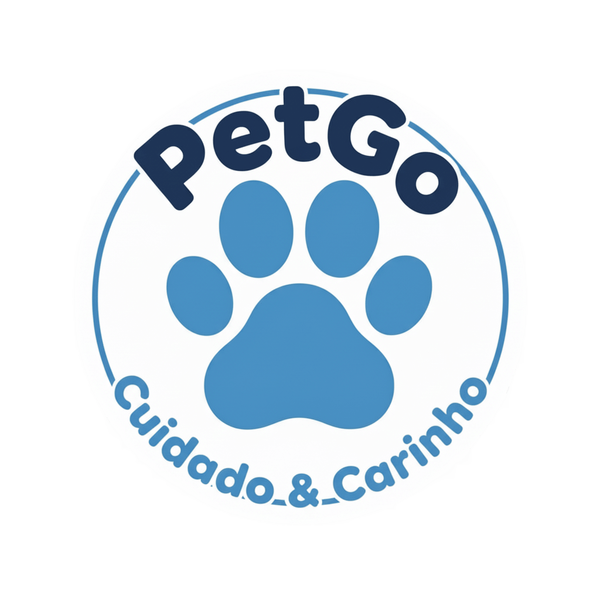

PetGO
Encontre, Ajude, Acolha.
Amor que Salva Vidas!
A comunidade que conecta você aos animais abandonados
e a quem pode transformar suas histórias.
 Baixar Grátis (APK)
Baixar Grátis (APK)
100% gratuito • Sem anúncios • Instalação segura e rápida